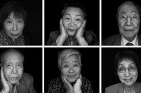

Survivors
Some of the victims of the Hiroshima-Nagasaki bombing somehow managed to save themselves. These survivors are called "Hibakusha" in Japan. Most of the survivors were very young when the bombing occured. Many of them were orphaned by the tragedy. They lived on to tell the tale of one of the most horrifying disasters of human history. Let us take a look at some of their stories.
Takato Michishita is a Nagasaki survivor and is currently 78 years old. On the day of the bombing, his mother didn't let his sister attend school as she had a bad feeling. He went with his mother for grocery shopping that day. Everyone was out on their verandas, enjoying the unusually quiet morning when suddenly, an old man yelled, pointing at a plane in the sky. Everyone rushed into their homemade bomb shelters. 6 year old Takato escaped to a nearby shop with his mother. The ground began to rumble as his mother covered him with a floor mat on all fours. Takato says, "Everything turned white. We were too stunned to move, for about 10 minutes. When we finally crawled out from under the tatami mat, there was glass everywhere, and tiny bits of dust and debris floating in the air. The once clear blue sky had turned into an inky shade of purple and grey. We rushed home and found my sister – she was shell-shocked, but fine. Later, we discovered that the bomb was dropped a few meters away from my sister’s school. Every person at her school died. My mother singlehandedly saved both me and my sister that day.”
Sachiko Matuso is a survivor of the Nagasaki attack and she is currently 83 years old. Her father built a little barrack on a local mountain to hide out in. Sachiko went to the barrack along with her family on the 7th and 8th even though the path till there was a strenuous journey. On the morning of the 9th, her mother and her aunt wanted to stay home but her father urged them to go to the barrack for one more day. At 11:02 am that morning, the bomb was dropped. Sachiko and her family at the barrack survived, they were later able to reunite with her father. However, he suffered from the effects of radiation. He soon came down with a high fever and he started balding and passed away after a while of suffering. Sachiko says, "If it weren’t for my father, we may have suffered severe burns like Aunt Otoku, or gone missing like Atsushi, or been lodged under the house and slowly burned to death. Fifty years later, I had a dream about my father for the first time since his death. He was wearing a kimono and smiling, ever so slightly. Although we did not exchange words, I knew at that moment that he was safe in heaven."
The survivors have seen horrifying circumstances and devastating loss. Even years after the event, they suffered medical conditions which not only affected themselves, but also affected their children and grandchildren. This was all due to the radiation when the bomb was dropped. They described how all around them, they saw people burnt so badly that their flesh was visible, how everywhere there were ruined buildings and half - burnt bodies of all kinds of animals, how all they could hear was weeping as people tried to reunite with their families and how some people were deafened or blinded by the explosion.
The survivors ask our generation to rid the world of nuclear weapons as they only cause loss and ruin. They hope that one day, the world will be free of such destructive weapons.